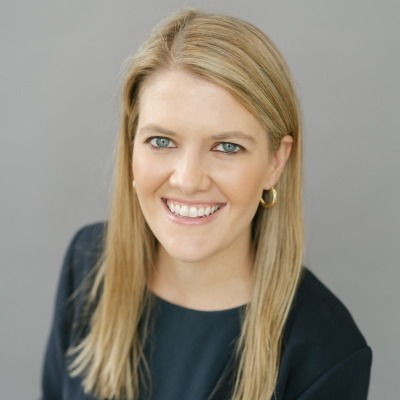
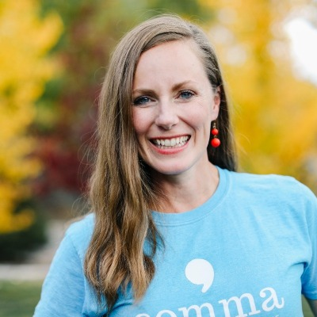

The first founding members have already said yes, and our education is built on the Invest for Better curriculum, used by women's investing communities across the country.
How It Works
Silver & Salt Capital is a membership community that offers paid education and free access to our deal flow.
Everyone makes their own money decisions and writes their own checks.
Rather than playing a single-player finance game where you bet big, and risk losing big, we are lifting and shifting how we play in the private equity market. Join us for a community experience where we learn and review deals together and then write a lot of small dollar checks into as many profitable women-owned Utah businesses as we can find.
Angel investing used to mean writing a $25,000 check, thirty times over, to be properly spread out. Almost nobody can. So we write small checks together, pool them into one investment a founder can build with, and each of us carries a little of the risk instead of one of us carrying all of it.


The first founding members have already said yes, and our education is built on the Invest for Better curriculum, used by women's investing communities across the country.
You do not have to be ultra-wealthy. The accreditation standard was written in 1981 and never adjusted for inflation, so far more women qualify today than realize it. More than 120,000 women along the Wasatch Front already do.
A thousand dollars into ten companies. It is a vacation. It is a handbag. It is money that would otherwise be spent and gone, put instead into women building businesses in your own state.
How to join
Three ways in, and one of them is free. Paid membership buys the education, the training, and the network. It never buys a place in a deal.
Associate
Free
Founding Member
$900 a year
Community Steward
$5,000 a year
Then you fill in a short application and book a twenty minute conversation, so we can get to know each other. See everything each membership includes.
Every investor here is a member. We can only offer a deal to someone we already know, so we get to know each other first. Membership is free if you want it to be.
What happens next
Deals open later this yearWe form a special purpose vehicle for each business we finish researching, and members who qualify can invest alongside us. This is not a fund. Nobody manages your money for you and nobody decides for you. You make your own call on every single deal.
Open to accredited investors: an annual income over $200,000 ($300,000 with a spouse), or more than $1 million in assets outside your home. Federal rules decide who qualifies, and they apply to everyone equally.
Associate membership is free and open to everyone, anywhere.